| |
Valravn Review
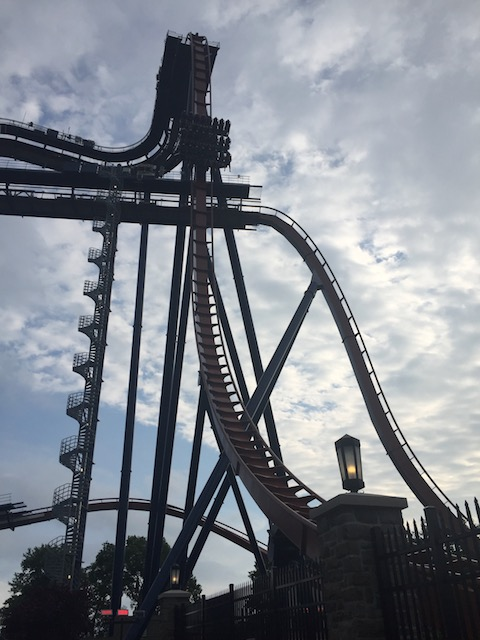
For today's review, we are heading to Cedar Point to review Valravn. This is the parks Dive Coaster, and this isn't just any Dive Machine. No, this is the biggest Dive Machine of them all, and the one with the most inversions. This should be good. Once you board the bigass rows, you take your seat and pull down the OTSR. Now, this isn't the normal B&M restraint. Valravn actually uses the vest restraints that B&M generally reserves for their Flying Coasters and their Wing Riders. Now, they fixed the tightening problem plauging the early Wing Riders. So that's the good news. But I have some issues with the restraints that I'll go over when I feel it's necesarry. Anyways, the floor drops, the gates open, and we're off! We roll through the standard B&M pre-lift dip before we climb the lifthill. And like on nearly all Dive Machines, the lifthill is about as steep as most coasters first drop. So you're just facing the sky the entire time. We reach the top, turn around, get a fantastic view of Cedar Point and Lake Erie, before we roll to the edge. We're right at the first drop. And now, I'm going to offically explain why I don't like the vest restraints on Valravn. The vest restraints are fine on the flyers and the Wing Riders. But on a Dive Machine, you wanna lean foreward. You want some room to move. Cause these restraints, even when not trying to choke you, they definetly hug you. It's like you're being hugged the entire ride. So on a dive machine, it kind of takes away a little bit of the intimidation factor. This is why despite being bigger and having more inversions, I slightly prefer Sheikra (Well, that, and there's some cool African theming on Sheikra). So yeah. We're at the edge, leaning down. And then it happens. We go down. And while you don't get the airtime and floating feeling thanks to the vest restraints, it's still a really great first drop. And yeah. We're now flying at about 70 mph now. We then take off and soar through the Immelmann. Yeah, it's not super intense, but you know what? It's still a lot of fun and a really good inversion. After rising upsidedown, we fall out of the Immelmann and twist straight up into the mid course brakes. We roll off the mid course brakes and into the second vertical drop. While this vertical drop isn't nearly as big as the first one, you have to admit that it still pretty fun. We then head into a Dive Loop. I know I did mention in the past that I wanted to see a Dive Loop on an Dive Machine. Well, I got my wish. The Dive Loop is pretty cool, but also standard. The smaller size doesn't really make it feel any different. It's still a floaty inversion. And speaking of floaty inversions, we now have our final inversion. A Zero G Roll. And let me tell you, there is NO whip here. And by no whip, I mean Silver Bullet's Zero G Roll is strong in comparison. But again, that's to be expected since this is a Dive Machine with huge trains and a floaty feel in general. We go into a downward helix before going over a small little airtime hill. And hey, there actually is a little bit of floater air here. Head up a curved hill and glide right into the brake run. It's not the craziest ride ever, but Valravn is just a ton of fun. I really like these B&M Dive Machines and I'd definetly give this a ride if you're at Cedar Point.
8/10
Location: Cedar Point
Opened: 2016
Built by: B&M
Last Ridden: June 25, 2018
Valravn Photos
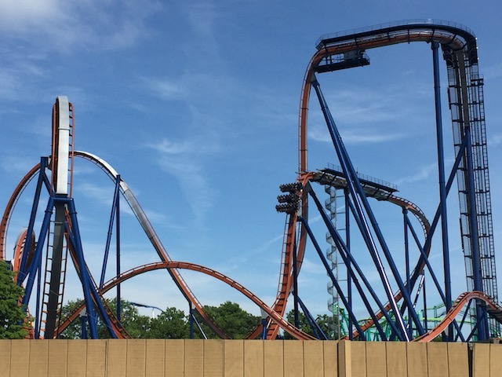
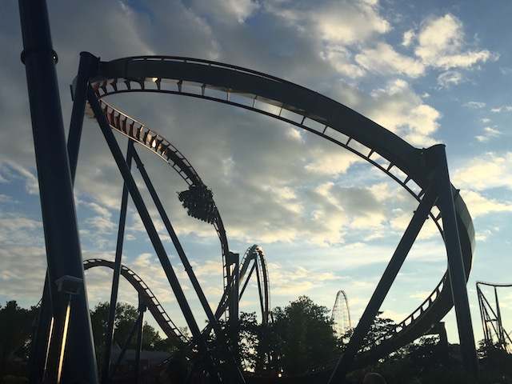
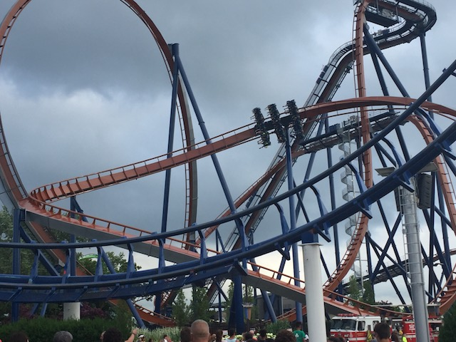
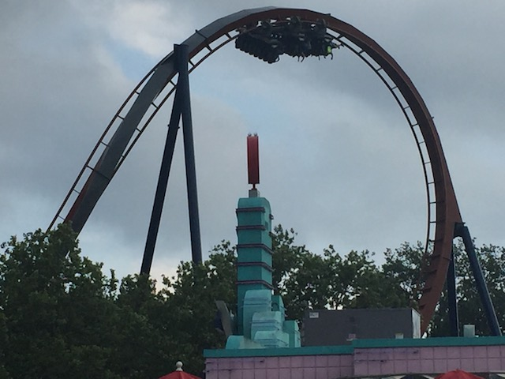
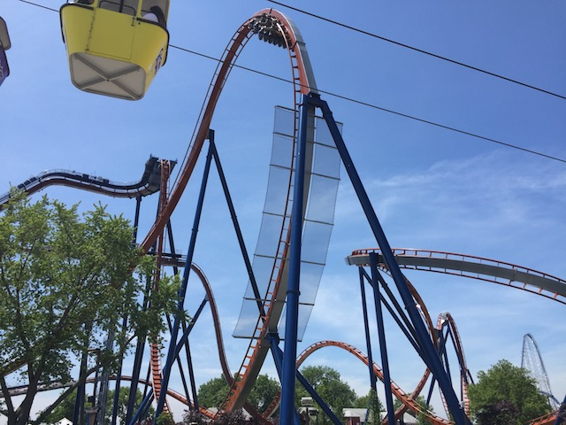
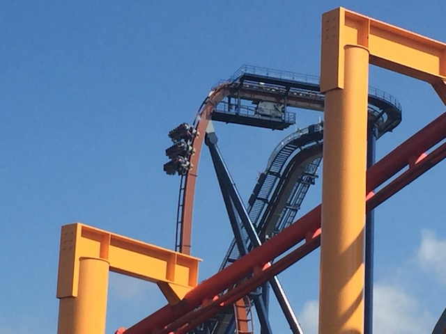
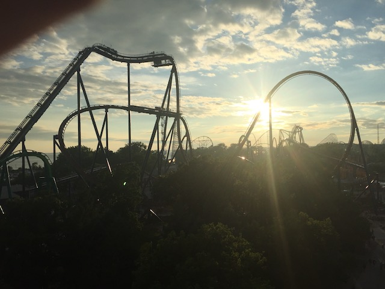
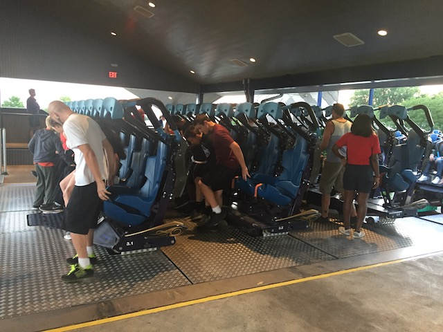
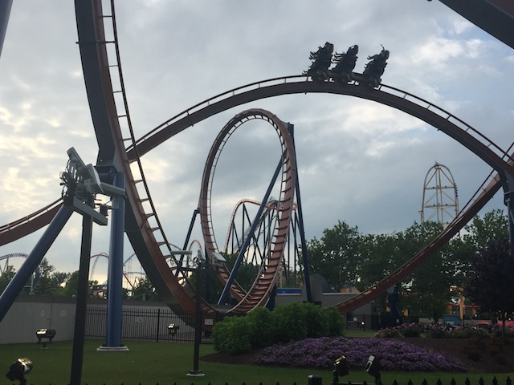
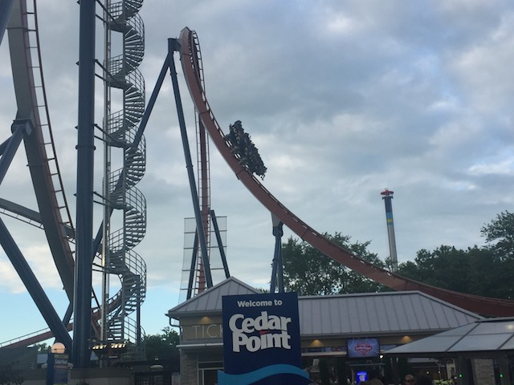
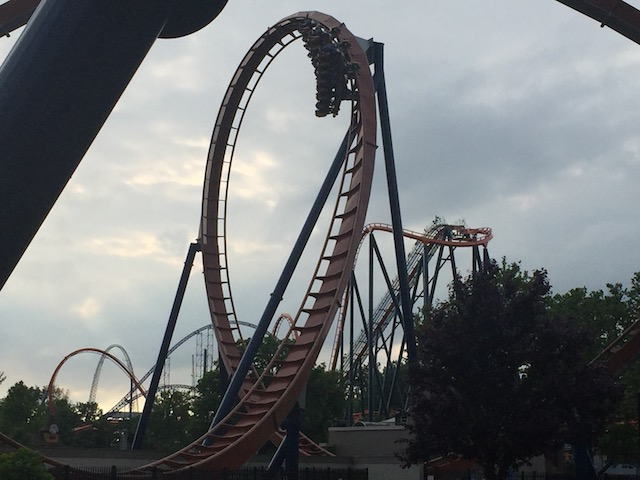
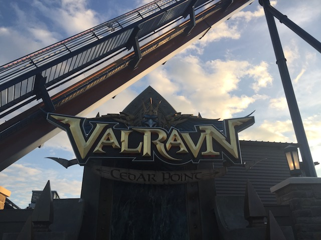
Home
|